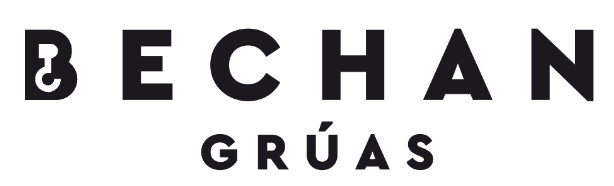

Grúas Bechan Preguntas frecuentes
En caso de no encotrar respuesta a su pregunta, puede contactarnos por cualquiera de nuestras líneas.

¿Qué medios de pago se aceptan?
Aceptamos Tarjetas(RedCompra), Transferencia y Efectivo. Por el momento NO aceptamos cheques.
¿Cúal es su zona de cobertura?
Trabajamos en toda la quinta región, las 24 horas. Sin embargo nuestras sedes se encuentran en Quilpué y Viña del Mar.
¿Qué tipo de vehículos pueden transportar?
Nuestras grúas soportan grandes variedades de vehículos, si su vehículo es inusual consulte via télefono.
¿Trabajan en toque de queda?
Sí, contamos con todos los permisos para trabajar durante las noches incluso con toque de queda.
¿Qué hago si no contestan?
Por la poca fiabilidad de las vías telefonicas, hemos adaptado dos de estas, además de chat via WhatsApp, Facebook y DM de Instagram.
¿En cuanto tiempo llegarán?
El tiempo varía según el trayecto y el contexto nacional, le recomendamos mantenerse en contacto con su conductor para que este le actualice su estado.
¿Tienen redes sociales?
Por su puesto, en la zona de contacto podrá encontrar los links.
© Copyright 2021, Bechan límitada
¿Dónde nos encontramos?
Ubicación: Etchevers Alto, Viña del mar.
Ubicación: Cabo de hornos, Quilpué.
Ubicación: Cabo de hornos, Quilpué.
Información de contacto.
Links de interés